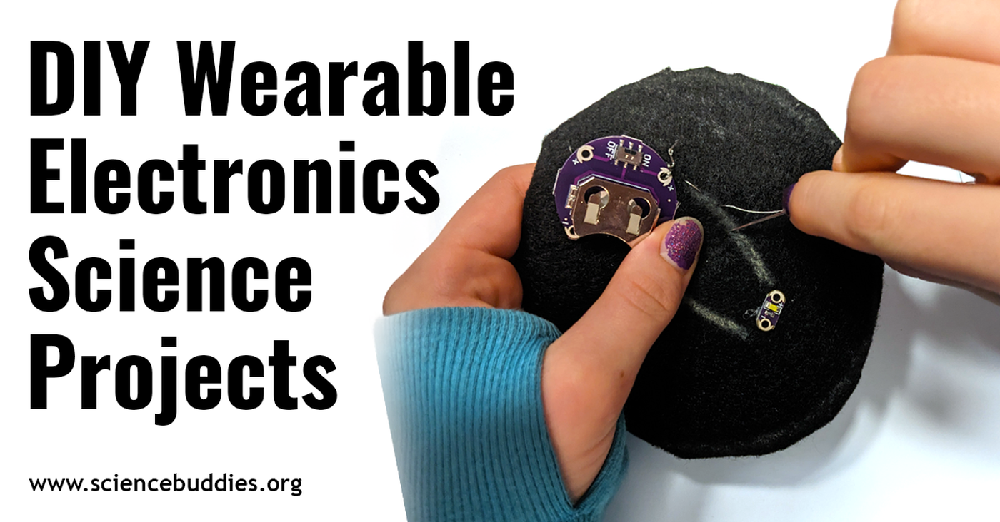

WEEK 8
PHYSICAL COMPUTING EXAMPLE
 link : https://www.sciencebuddies.org/blog/wearables-science-projectsFrom electronic textiles and sewn circuits to personalized clothing and accessories, and then to DIY health and safety wearable devices.Copy of fish Playground
PRACTICE
FISH PLAYGROUND
 <4>Components:
<4>Components:
•Arduino Uno R3×1
•10 kΩ resistance×1
•A photoresistor×1
•servo×1
•Breadboard×1
We attempted to assemble the Fish Playground project. We connected a 10kΩ resistor to the photoresistor and the Arduino Uno R3 board. Then, we installed a servo motor and connected it to the circuit. After completing the circuit assembly, we wrote code to control the project's functionality. The process went smoothly without encountering any issues.
CONTROL LED BY POTENTIOMETER
 <4>Components:
<4>Components:
•Arduino Uno R3×1
•resistance×1
•USB cable x1
•LED×1
•Breadboard×1
•Jumper M/M ×5
•Potentiometer×1
We attempted to control the brightness of an LED using Arduino Uno R3. I connected a 10k-ohm potentiometer to the 5V and GND pins, with its wiper connected to analog pin A0. Next, I connected the longer leg of the LED to digital pin 9 through a 220-ohm resistor, and the shorter leg to GND. After completing the circuit setup.In the code, the value read from the potentiometer needs to be adjusted to control the brightness of the LED. By turning the potentiometer knob, the voltage value of the pin connected to the potentiometer changes, thereby adjusting the LED brightness. The code reads this voltage value using the analogRead() function and stores it in the potValue variable. Then, the map() function maps this voltage value to the LED brightness range (0-255) and stores it in the brightness variable. Finally, the mapped brightness value is written to the LED pin using the analogWrite() function to control the LED brightness.. This allowed us to adjust the LED brightness using the potentiometer.
LED MATRIX


Component:
•Control board x1
• Breadboard x1
• IUSB cable x1
• LED matrix x1
• 74HC595 x1
• R220 x8
• Jumper M/M x33
The LED matrix is a square display module arranged by a grid of leds. This is a monochrome LED matrix with 8 rows and 8 columns, containing a total of 64 leds.In this practice, my team and I first drew an 8x8 grid on grid paper and designed several patterns. Then, following the instructions, we laid out the circuit and filled in the code in the sketch, and inputted the corresponding values according to the designed patterns. However, the LED matrix did not display anything. We repeatedly checked the circuit and even replaced the Arduino Uno R3, but still no response. This was the only project that didn't succeed.